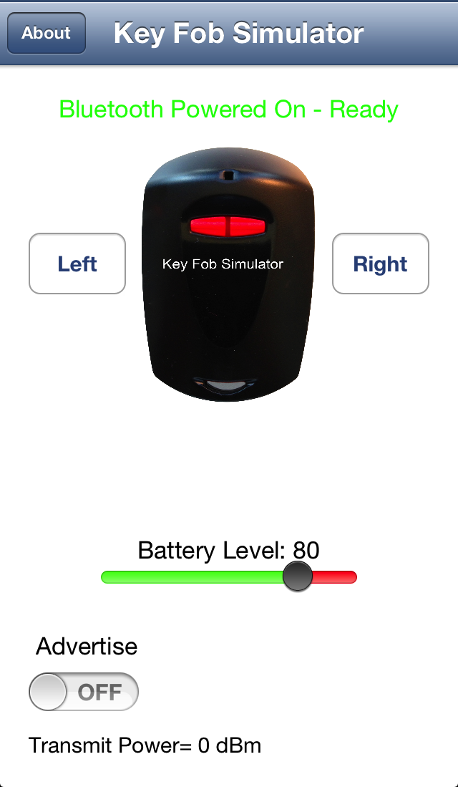
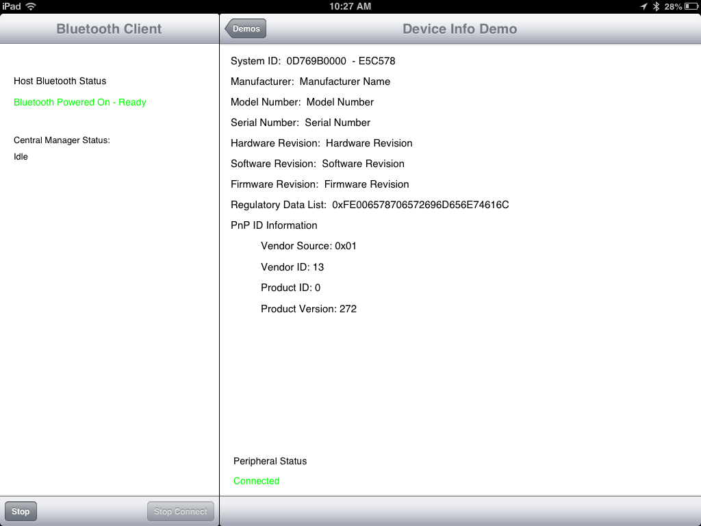
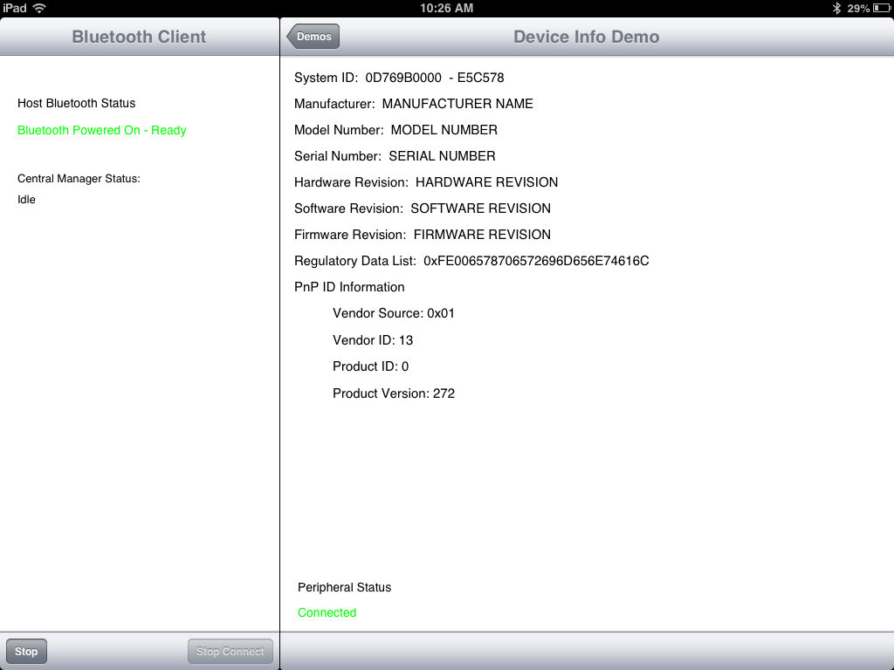
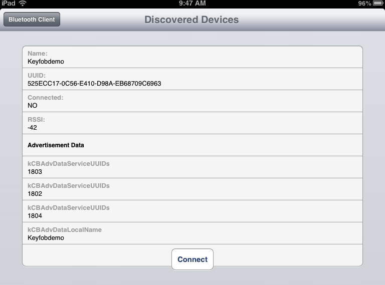
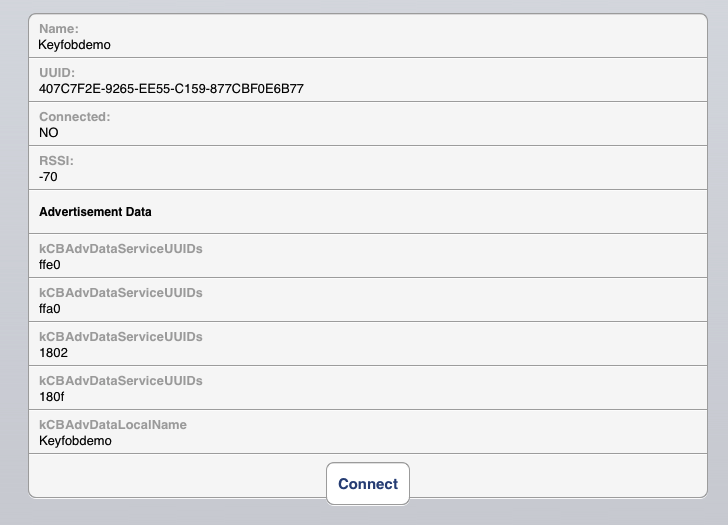

Key Fob Simulation
TI Key Fob Simulator
|
 |
TI
Key
Fob
|
Simulator
Screen Shot |
iOS Key Fob Simulator
The iOS Key Fob Simulator simulates the key fob peripheral that
comes with the CC2540 Mini Development Kit from Texas Instruments. The
simulator enables an iPhone to masquerade as a key fob peripheral
providing accelerometer data, key press notifications, battery level
data, a dual tone immediate alert and transmit power data. Master
devices (Centrals) which can connect to a key fob peripheral should
also be able to discover and connect to the simulator without any
modifications.
The simulator requires the hosting iOS device to support Bluetooth 4.0.
iPhone models beginning with the 4S and 3rd generation iPads are
capable of hosting the simulator.
The services and characteristics of the simulator are described below.
The simulator fails the Turing test compared to an actual key fob in
specific use cases which are documented. However, the
simulator does enable some test cases that are not possible using the
key fob hardware. The simulator is a complementary tool for developers
working with the CC2540 Mini Development Kit.
Quick Start
After launching the simulator, slide the Advertising Switch depicted on
the screen shot to the ON position. Discover and connect to the
simulator using any Bluetooth Low Energy (BLE) Device Scanner.
See references at the bottom of the page for BLE device scanners.
Left Key Functionality
The key fob hardware uses the left and right keys to change the
internal state of the key fob. For example pressing the right key
on the key fob initiates advertising for a 30 second interval.
The simulator provides a much more visible ON/OFF switch to control
advertising and does not mimic the hardware behavior of the right key.
The left key behavior does carry over to the simulator. Left key
presses toggle the value of the Transmit Power between 0 dBm and -6 dBm
as described in the Tx Power Service description. The left key also
provides the user a manual override to quiet an active Immediate Alert.
Published Services and Characteristics
The hardware version of the key fob exposes nine services:
Generic Access Service (0x1800)
Generic Attribute Service (0x1801)
Immediate Alert Service (0x1802)
Link Loss
Service
(0x1803)
Tx Power Level Service (0x1804)
Device Information Service (0x180A)
Battery
Service
(0x180F)
Accelerometer Service
(0xFFA0)
Simple Keys Service
(0xFFE0)
The first seven services are
Registered GATT Services
with the Bluetooth SIG while the Accelerometer and Simple Keys
services are custom service implementations by TI and do not conform to
any standard profile specification. TI used 16 bit UUIDS for the
custom services rather than assigning 128 bit UUIDs per the Bluetooth
4.0 specification.
The simulator exposes only seven of the listed key fob services. The
Link Loss Service is not implemented in the simulator because the
iOS Core Bluetooth Framework does not currently (iOS SDK: iOS 6.1)
provide a mechanism for a slave device to determine when a connection
to a master device is terminated. There are also defects in the
Core Framework which prevent implementing the Generic Access Service in
the simulator to match the prescribed behavior of the Generic Access
Service implemented by the hardware version of the key fob. These
issues will be highlighted in the discussions which follow.
Generic Access Service (0x1800)
The Generic Access Service is a mandatory GATT service which all
peripherals must implement. The five service characteristics are each
Read only with only two of the characteristics (Device Name and
Appearance) required to be implemented to be compliant with the GATT
specification.
Generic
Access Service Characteristics
Device
Name
(0x2A00)
Appearance
(0x2A01)
Peripheral
Privacy Flag
(0x2A02)
Reconnection
Address
(0x2A03)
Preferred
Connection Parameters (0x2A04)
The key fob hardware implements each of these characteristics
with zero values returned for Appearance, Privacy Flag, and the
Reconnection Address. The Preferred Connection Parameters
characteristic returns a value of 0x5000A0000000E803.
The iOS Core Bluetooth Framework appears to have a defect associated
with reading the Device Name characteristic associated with the Generic
Access Service. An error indicating the Device Name is unreadable
is always returned when this characteristic is read. The error is
returned on every peripheral device I have tested including peripheral
implementations developed using Apple's CBPeripheralManager class in
which the framework provides the Generic Access Service and
corresponding Device Name characteristic automatically.
As noted, when a peripheral/slave is implemented using the Core
Bluetooth Framework, and specifically the CBPeripheralManager Class,
the Generic Access Service is automatically created and exposed by the
framework itself. The Appearance Characteristic value provided by
the framework corresponds to "Generic Phone" which corresponds to the
hosting platform.
At this point I have not researched whether the characteristic values
provided by the iOS Core Bluetooth Framework can be modified by the
application before communicating to the Master/Central client.
Generic Attribute Service (0x1801)
The Generic Attribute Service is a mandatory GATT service which is
comprised of a single control-point characteristic which can not be
read but only indicated (notification + response confirmation).
Generic
Attribute Service Characteristic
Service
Changed (0x2A05)
The key fob hardware provides the required characteristic definition. I
did not experiment with subscribing for indications for the Service
Changed characteristic as it was not germane to the key fob
functionality.
In a manner similar to the Generic Access Service, the Core Bluetooth
Framework automatically provides and publishes the Generic Attribute
Service for peripheral applications using the CBPeripheralManager
Class. The Service Changed characteristic is provided and
available for indication subscription.
Immediate Alert Service (0x1802)
The Immediate Alert Service is a registered GATT service and exposes a
single characteristic:
Alert Service
Characteristic
Alert Level (0x2A06)
Alert Level is defined to be a "Write Without Response" characteristic
meaning that the Master device should be able to write a value to the
Alert Level characteristic specifying that no return response from the
peripheral is desired. Three alert level values can be written to
the Alert Level Characteristic:
Alert
Level Values
No Alert
Mild Alert
High Alert
Writing a "No Alert" value quiets the key fob while the "Mild Alert"
and "High Alert" values result in two distinct tones to be sounded for
10 seconds on the key fob. A low frequency tone is associated with
"Mild Alert" with a higher frequency tone played for a "High
Alert". In both cases, the tones are accompanied by a blinking
LED indicator.
The user can manually quiet the key fob when an alert is occurring by
pressing the left key on the fob.
Immediate Alert Service Simulator Implementation Issues
The specification also requires that the alert be turned off if the
physical connection to the key fob is terminated. The simulator can not
detect a terminated physical connection and therefore can not turn off
an active alert when a connection is terminated. An active alert will
turn off after 10 seconds or by manually turning off the alert using
the left key on the fob.
A defect in the Core Bluetooth Framework prevents "Write Without
Response" type writes to be delivered to the peripheral. The
work-around requires
the Master device to Write to the characteristic and request a
confirmational response indicating that the write occurred (or
failed). This of course, violates the Bluetooth Specification for
the Immediate Alert Service.
Link Loss Service (0x1803)
As noted in the introductory section above, the simulator can not
implement the Link Loss Service because the iOS Core Bluetooth
Framework does not provide a mechanism for detecting a terminated
or dropped connection between the peripheral and its connected client.
Tx Power Level Service (0x1804)
The Power Level Service is also a registered GATT service and exposes a
single Read Only characteristic:
Tx Power Service Characteristic
Tx Power Level (0x2A07)
The Tx Power Level characteristic returns the transmit power of the key
fob in dBm. The key fob peripheral transmits at either the 0 dBm level
or at the -6 dBm level. The user can chose the transmit level by
pressing the left key on the fob. Left key presses on the fob toggle
between the two transmit levels.
The simulator behavior mirrors the key fob hardware behavior in that
the Tx Power Level characteristic returns either 0 dBm or -6 dBm. The
simulator also enables the user to select the transmit power level
reported by the characteristic by toggling the left key in the same
manner as the hardware key fob. The simulator is not capable of
adjusting the actual transmit power of the iOS device, the simulator
simply models the behavior of the Tx Power Level characteristic.
Device Information Service
(0x180A)
The GAT registered Device Information Service provides manufacturer or
vendor information about a device. Though the key fob hardware exposes
this service the data values the service provides are simply
placeholders for the corresponding characteristics. Each of the
characteristics defined by the Device Information Service are Read only
and none are required to be implemented since each characteristic is
considered optional.
Device
Information Service Characteristics
|
Manufacturer
Name String |
(0x2A29) |
|
Model Number
String |
(0x2A24) |
|
Serial Number
String |
(0x2A25) |
|
Hardware
Revision String |
(0x2A27) |
|
Firmware
Revision String |
(0x2A26) |
|
Software
Revision String |
(0x2A28) |
|
System
ID |
(0x2A23) |
|
Regulatory
Certification Data List |
(0x2A2A) |
|
PnP
ID |
(0x2A50) |
The key fob hardware implements each of these characteristics but
simply echoes the characteristic name for the string attributes
without providing any real data. Examples:
Manufacturer Name
|
"Manufacturer Name"
|
|
Mode Number
|
"Model Number"
|
|
Serial Number
|
"Serial Number"
|
|
etc.
|
|
|
The keyfob hardware does provide data for the non-string type
characteristics.
The simulator provides a high fidelity simulation for the Device
Information Service as illustrated in the screen snapshots captured
from a BLE client connected to both the hadware Key Fob and the
simulated key fob:

Key Fob Hardware
Device Information Service

Key Fob
Simulator Device Information Service
The data is identical except the Simulator uses all uppercase for the
character strings simply to distinguish the output if needed.
Battery Service (0x180F)
The GATT registered Battery Service exposes a single characteristic
which returns the percentage of remaining battery life. A fully charged
battery returns 100 while a completely discharged battery returns 0.
Battery Service Characteristic
The characteristic can be read as required by the Bluetooth SIG and can
also be subscribed to as TI implemented the optional notification
support in the key fob hardware.
The simulator also supports both reading and notification subscription
to obtain the battery level. The battery level is set with the
slider control shown on the screen shot. As the slider control is moved
by the user the updated value of the slider is immediately pushed to
subscribers of the Battery Level characteristic. Otherwise, the battery
level will be returned to the client when the characteristic is read.
The simulator's ability to change the battery level on demand provides
an easy testing mechanism for device scanners wanting to test receiving
updates for a characteristic value that typically changes very
infrequently.
Accelerometer Service (0xFFA0)
The Accelerometer Service is a custom service defined by TI which
provides accelerometer control (enable/disable) and accelerometer data
for a tri-axial accelerometer that is embedded in the key fob.
The Accelerometer Service exposes four characteristics:
Accelerometer Service Characteristics
Accelerometer
Enable
(0xFFA1)
Accelerometer Dynamic Range
(0xFFA2)
Accelerometer X Axis
Data
(0xFFA3)
Accelerometer Y Axis
Data
(0xFFA4)
Accelerometer Z Axis
Data (0xFFA5)
The Accelerometer Enable characteristic is a Read+Write characteristic.
A non zero value written to the characteristic enables the
accelerometer which then begins generating data. A zero value written
to the accelerometer turns the accelerometer off. The simulator
models this same behavior.
The Dynamic Range characteristic is a Read only characteristic which
returns an encoded value representing the dynamic range of the
accelerometer. The firmware version of the key fob hardware that
I have loaded in the fob does not allow changing the dynamic range of
the accelerometer and is set to 2G's corresponding to +/- 1G. TI
encodes the dynamic range value using the decimal integer value of 20
to represent a 2G dynamic range. The firmware is capable of
representing an 8G dynamic range by returning a decimal integer value
of 80. The simulator always returns a decimal integer value of 20
for this characteristic.
Accelerometer X-Y-Z characteristics can be read or subscribed to for
notification. Each axis must be independently read or
subscribed. Accelerometer data is scaled to 8 bits for each axis
and does not appear to be preprocessed or filtered.
The simulator models the key fob accelerometer service by also
providing 3 distinct characteristics corresponding to each
accelerometer axis. Additionally, an accelerometer characteristic
only provided by the simulator is exposed:
Additional
Simulator Only Accelerometer Characteristic
Tri-Axial Accelerometer
Data (0xFFAA)
The Tri-Axial Accelerometer Data packages all three accelerometer
components in the same transmission packet. This enables three
value to be sent in one atomic packet and eliminates the inter-packet
delay required between packets for individual component
transmissions. The inter-packet delay is still required between
distinct samples of the accelerometer, but eliminates inserting the
delay when sending X, then Y, then Z in succession.
The simulator updates clients with accelerometer data at a rate of 15
Hz.
Simple Keys Service (0xFFE0)
The Simple Key Service is another custom service defined by TI which
enables the remote monitoring of the two keys that are found on the key
fob. A single characteristic is exposed by the service which
supports subscriptions for notifications of the state changes
associated with the keys:
Key
Press Service Characteristic
Key Press State (0xFFE1)
The Key Press State encodes four values. A value of 0x00 indicates that
neither key is pressed. A value of 0x01 indicates that the left
key is pressed. A value of 0x02 indicates the right key is pressed. The
final value, 0x03 indicates that both keys are pressed.
The simulator uses two button controls for the user to press which
reside to the left and right of the image of the body of the key fob.
When a button is pressed, the corresponding red LED indicator
representing the key on the body of the fob illuminates with a yellow
light.
Advertising Functionality
The key fob hardware advertises three primary services along with a
local name, RSSI and a device UUID as depicted in the captured screen
shot from a BLE scanner :

Key Fob Hardware Advertisement
The actual broadcasted advertisement data is listed in the bottom
section of the display. The key fob peripheral advertises three primary
services corresponding to the Immediate Alert Service, Transmit Power
Service, and Link Loss Service in addition to the local name
"Keyfobdemo". The choice TI made to advertise these three
services in the limited advertising space available probably coincides
with the key fob's conformance to the GATT defined Proximity Profile.
The Proximity Profile relies on the implementation of these three
services.
The simulator advertises a different set of services due to the
inability to implement LInk Loss. The TI defined custom Accelerometer
and Key Press services make up the advertised services for the
simulator as shown here:

Simulator
Advertising Data
Summary of Issues
The iOS Key Fob Simulator falls short of being a high fidelity
simulator in three areas:
1) Link Loss - inability to detect a terminated
connection by the simulator.
2) Generic Access Service Device Name Error - iOS
Framework error prevents the reading the Device Name.
The Apple defect ID number is
13362139.
3) Write Without Response Error - aside from not
being able to implement Link Loss, the Write Without Response Error
described in the Immediate Alert Service is the most severe issue
uncovered in the Core Bluetooth Framework. iOS peripherals will
simply fail to update writable characteristics that clients have
written using Write Without Response write commands. This defect
must be fixed by Apple before a legitimate product offering can be made
using an iOS based Bluetooth 4.0 peripheral.
The Apple defect number is 13361937.
Bluetooth Low Energy Scanners
Available in the App Store:
LightBlue
- a Bluetooth Low Energy Device Scanner
TI
BLE MultiTool - a nice
scanner which includes graphical data for characteristics
TechBasic
- a BASIC
environment for iOS devices enabling BASIC programs to be written and
executed on iOS platforms without needing xCode or a developer's
license.
BLE Scanner -
Source Code For BLE Scanner on Git Hub